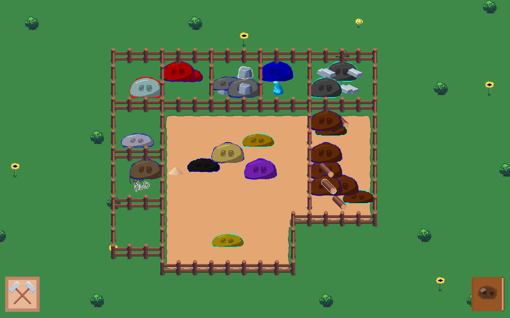
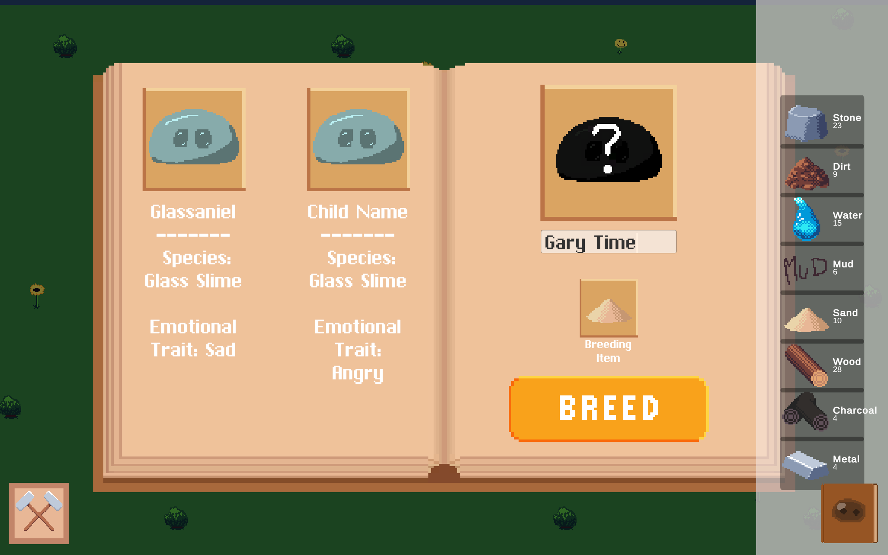
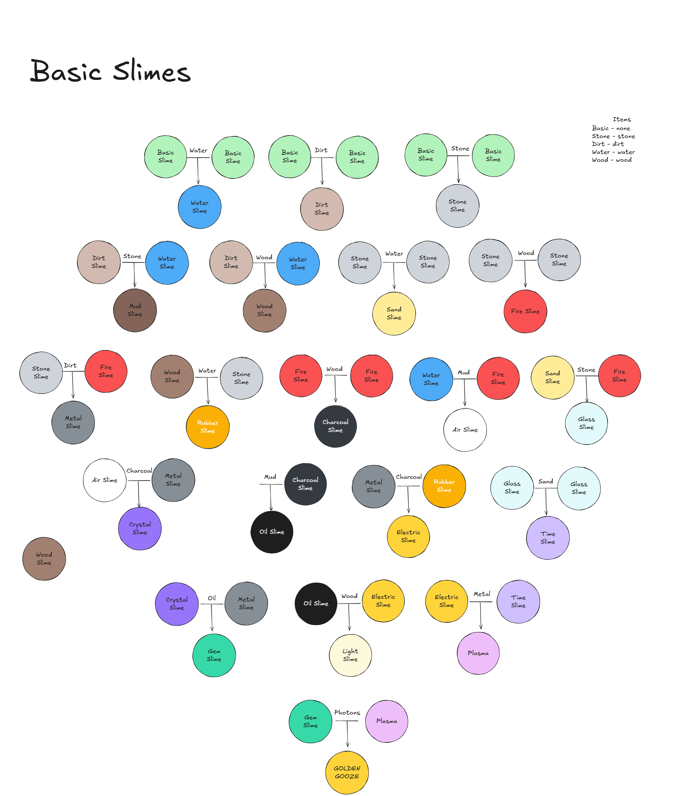
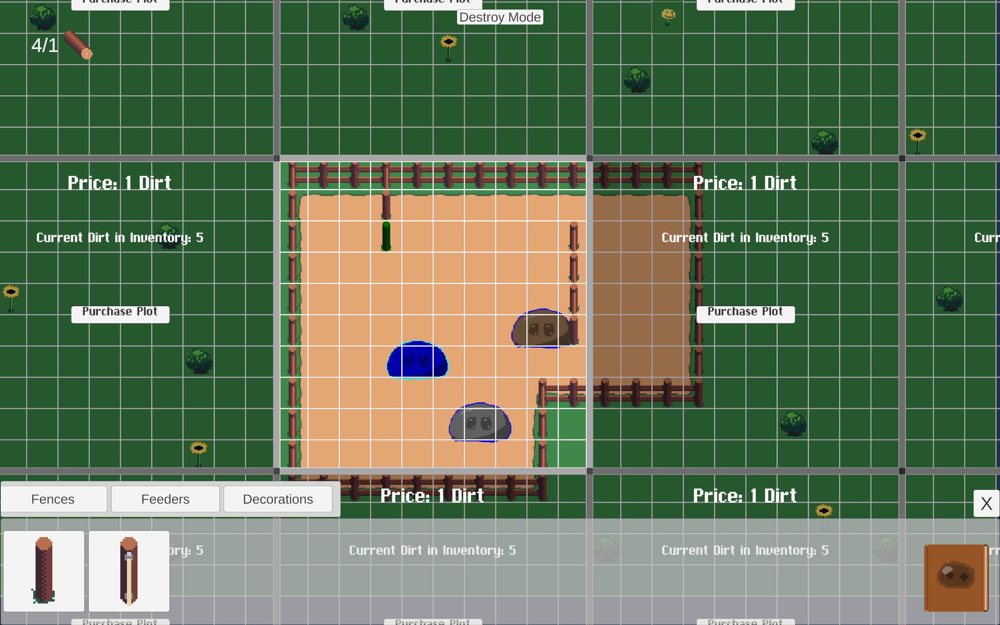

Gooze Gardens
Gooze Gardens was a semester-long project developed during my third-year at the Rochester Institute of Technology from October 2025 - December 2025. I worked as a Game Designer in a team of 5 people for a period of six, two-week long sprints. During this time, I developed and improved skills pertaining to AGILE development, rapid iteration, and Unity/C#.

Breeding System
The first system I designed and developed was the slime breeding system. Originally, the goal was to have slimes autonomously reproduce. The hope was that by having the slimes behave on their own, the player would feel as though they were truly "alive". However, towards the end of the second sprint we realized we wanted to pivot the focus of the game to be more resource-management esque. In order to give the player more agency and feel like they are the ones running their farm, I introduced player-sponsored breeding. With this system, players had a lot more control over what types of slimes live on their farm, and how many of each type.

Emotional Traits and Species
Originally, Gooze Gardens was a simulation game focused on discovering unique slimes that mutate and evolve as they reproduce. To faciilitate this, slimes initialyl had genes and traits that affected their appearance and behaviors. However with the game pivoting to focus on resource management, we decided to change how these mechanics worked. Instead of genes and traits, we implemented a species system and emotional traits. Different species drop different items, which then can be combined with other species to discover entirely new species of slimes. This brought a sense of progress to the game and gave the players something to strive for.

Emotional traits affected a slime's personality and behaviors, all while remaining seperate from the species. With this system, players are able to optimize their species drop-rates by selectively breeding slimes with positive emotional traits.

Building System
The last system I designed and developed was the building system. This system allows players to expand their farm, place fences to seperate slimes, and remove previously added structures.
